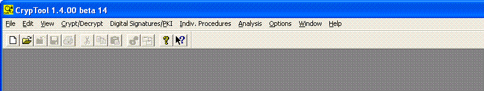
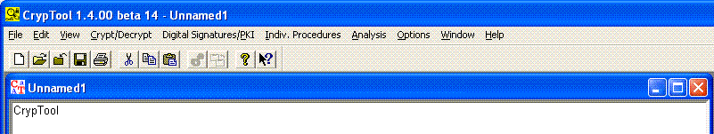

Within CT1, all menus can be unfolded all the time, but only the menu items which fit to the current document type can be selected. The remaining menu items are disabled. Which menu items can be selected so depends on the type of the active document (binary, text, or graphics) and whether a document is open or not. However you will always be shown all menu items.
If no file is loaded, the main window looks like this (all main menus can be selected; but most icons in the icon bar are disabled):

If a text file is loaded, the main window looks like this:

A picture of the complete menu tree is in appendix A1 of the CT Book. This overview shows all menu items available within CT1.
In addition you can find the complete menu tree at the CrypTool webseite for CT1 (there is not only the menu tree for the English version, but there are the menu trees for all language versions of CT1).